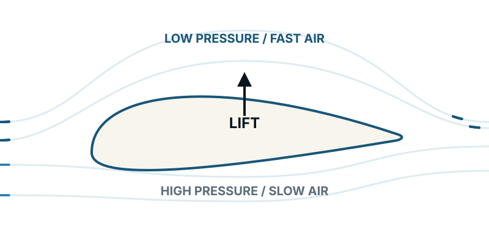
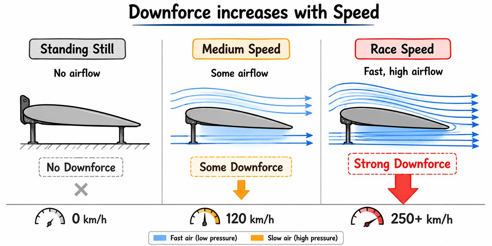
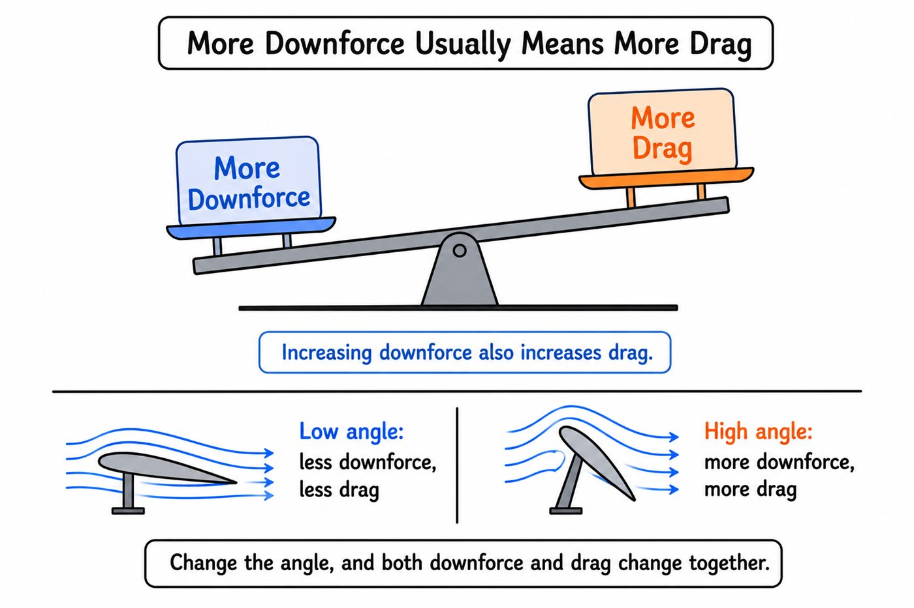
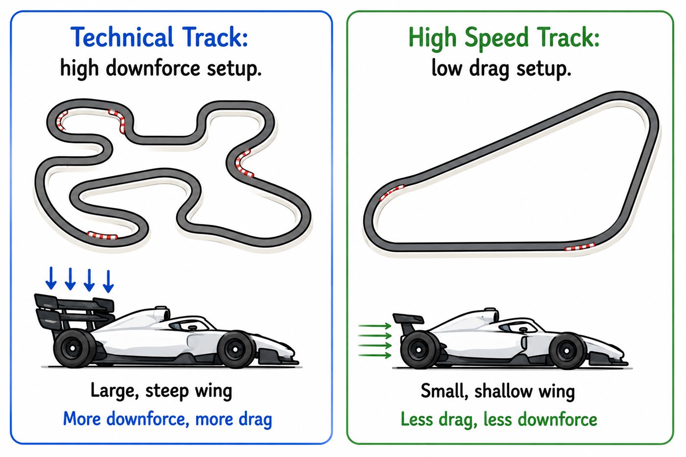

01 — THE SECRET WEAPON
Why this is the most exciting lesson so far
Drag fights a car's motion. Downforce gives its tyres more normal load and helps the car use more grip at speed.
Module 1 introduced moving air, pressure and velocity. Module 2 showed how shape creates resistance and wakes. Now those ideas become one of motorsport's most valuable forces.
Downforce helps a race car corner faster, brake harder and accelerate more confidently—without adding the same permanent mass that physical ballast would.
02 — UPWARD FORCE
Understand lift first
A wing creates lift by establishing a pressure distribution around itself and turning airflow. Lower pressure over much of an aircraft wing and higher pressure beneath it contribute to a net upward force; the wing also imparts downward momentum to the surrounding air.

Air over the top does not have to “meet” air from below at the trailing edge. Wing shape, angle, circulation, pressure distribution and the turning of airflow belong to one connected physical story.
03 — FLIP THE JOB
From lift to downforce
A race-car wing is oriented to create a net downward aerodynamic force. Its pressure field and the way it turns the flow produce a reaction that pushes the wing—and the car attached to it—toward the track.
More aerodynamic load presses the tyres into the track. Within the tyres' operating limits, that can support more cornering, braking and acceleration force.
04 — EXPLORE THE REAL SHAPE
Rotate an F1 front wing
Drag to rotate, scroll or pinch to zoom, and look at how the main plane, flaps and end sections form a three-dimensional system rather than one simple slice.
Your browser cannot display the interactive model. The lesson diagrams still work normally.
Model credit: “F1 2025 Front Wing” by Abu Saif, licensed under CC BY 4.0.
05 — AERO WAKES UP
Why downforce barely exists at low speed
At pit-lane speed, relative airflow is modest and aerodynamic loads are small. As speed rises, dynamic pressure rises with speed squared, so downforce grows rapidly when wing configuration and flow remain similar.

06 — NO FREE LUNCH
More downforce usually brings more drag
A wing that creates stronger aerodynamic loading also changes the air more aggressively. Induced effects, pressure drag and possible separation increase the cost paid in forward resistance.

This is why teams do not simply maximise wing angle. Technical tracks reward cornering load, while tracks with long straights often reward a lower-drag setup.

07 — THINK LIKE AN ENGINEER
Efficiency is the real target
Engineers care about how much useful downforce a design creates for its drag cost. A more efficient package generates more downforce for the same drag—or the same downforce with less drag.
More cornering load may repay the extra straight-line drag.
Lower drag may save more lap time than extra load gains.
Front and rear load must work together so the car stays predictable.
Downforce is a tool, not a score. The right question is: does this extra load save more lap time than its drag costs?
WATCH NEXT
Connect the diagrams to motion
Add your side-by-side airplane wing and race wing walkthrough here.
The front wing above is locally hosted, while the lightweight viewer loads only on this page.
GO DEEPER
Books worth opening
Race Car Aerodynamics — Joseph KatzWing design and the downforce-drag compromise for race cars.
Understanding Aerodynamics — Doug McLeanA deeper explanation of lift grounded in real physics.
Introductory Flight PrinciplesAircraft lift resources explain the same fluid mechanics with a different objective.
Finished this lesson? Mark it as complete to track your progress.